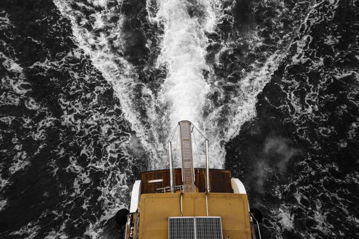

Module 07 · 航空发动机进阶课程
Chuck Yeager · Bell X-1 · Ma 1.06 —— 音障被打破的那一天
他们以为这是墙。其实是一道门。
飞机飞行时，机头会不断产生压力扰动波，向四周传播。
当飞机越飞越快，波纹的形态会发生怎样的变化？
飞机运动速度远小于音速，扰动波能跑到飞机前方，提前"通知"前方空气「飞机要来了，请让路」。同心圆波纹在飞机前方和后方都有，前方波纹密集一些（多普勒效应），但信息仍然传递到前方。
当飞行速度超过音速，所有的扰动都堆积在同一个面上——发生了什么？
人群缓缓走向地铁出口。前面有足够的时间和空间让大家有序通过，没有拥挤——这就是亚音速气流，扰动能提前"通知"前方空气让路。
散场了！大量人以极快速度冲向出口。后面的人不知道前面已经挤满了，还在拼命推——人全部堆积在门口，形成一道薄薄的"人墙"。
超音速气流中，空气分子冲过来的速度比"消息"传播得还快。后面的分子不知道前面已经被挡住了，继续全速冲来，全部挤在一层极薄的面上——这就是激波。
下方动画是在激波的参考系下观察的。右侧蓝色分子以超音速涌来，撞上激波面后变成左侧橙色分子——速度骤降、密度骤增、温度骤升。
👆 拖动滑块，观察马赫数越大，分子速度差、密度差、振动幅度的变化越剧烈
虚线标记 = 激波前的基准值 1.0。柱条越长，变化越剧烈。拖动上方滑块看参数如何响应。
关键发现：不管来流多快（Ma₁ 可以是 2、3、甚至 5），经过正激波之后，马赫数 Ma₂ 一定小于 1——也就是说激波把超音速流一步拉回亚音速。 这不是近似，而是流体力学的严格结论。
所有这些剧烈变化——压力暴增、温度飞升、速度骤降——发生在多大的距离内？
激波的厚度大约等于几个空气分子平均自由程——也就是分子在两次碰撞之间飞行的平均距离（海平面约 0.0001 mm）。 在这么薄的一层里，气流的压力、温度、密度、速度全都发生了不可逆的阶跃变化。 这是自然界中最剧烈的流体现象之一。
"音障"并不是一面真实的墙。当飞机速度接近音速时，机翼局部气流率先超过音速，产生局部激波，导致阻力急剧增加。
👆 移动鼠标在曲线上查看不同马赫数对应的阻力系数
想象你把手伸出车窗：手掌正面迎风，风阻最大；把手掌侧斜一个角度，风就会沿手掌滑过去，迎面的冲击力变小了。后掠翼的原理完全一样——把机翼向后倾斜一个角度，让气流的一部分沿着机翼前缘"滑过去"， 真正"正面撞上"机翼的速度分量就变小了。
机翼正面迎风，有效速度 = V = Ma 0.65
有效速度 = V × cos(35°) = Ma 0.53
💡 试试看：慢慢把飞行马赫数拖到 0.85 以上，看看直翼和后掠翼分别会发生什么？
「这就是为什么喷气式飞机的机翼都是后掠的——不只是好看，是物理需要」
亚音速中，管道收窄→气流加速。但在超音速中，收窄反而让气流减速！要从亚音速加速到超音速，需要先收缩后扩张的管道。
管道收窄 → 气流加速。就像捏住水管，水流加快。连续性方程 ρAV = const，A↓则V↑。
管道收窄 → 气流减速！因为超音速气流的可压缩性效应占主导，密度变化比截面变化更快。
收缩段将亚音速加速到音速（喉部Ma=1），扩张段继续将音速加速到超音速。这就是拉瓦尔喷管。
「航空发动机的喷管，就是拉瓦尔喷管的工程实现。
战斗机的可调喷管，就是在动态调节这个形状。」
一个点在水面上移动，以不同速度产生涟漪——当速度超过波速，V形"水波激波"清晰出现。

快速行驶的船只，船头推开的水波形成V形尾迹——与超音速飞机的马赫锥是同一个物理原理。
纹影（Schlieren）照相技术通过光线折射可视化空气密度梯度，清晰呈现锥形激波的明暗条纹。
战斗机在跨音速飞行时，局部激波导致空气急剧膨胀冷却，水汽凝结形成壮观的圆锥形白云。
「船头的V形水波，飞机的锥形激波——同一个物理原理」